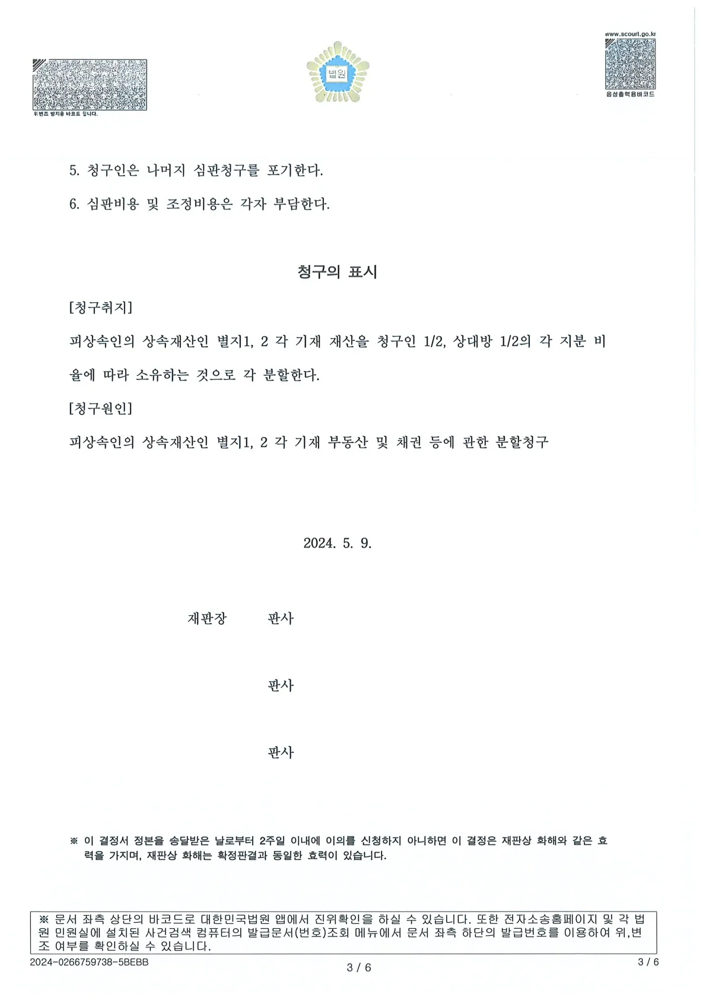

5년간 이어진 상속재산분할 심판 방어 성공 사례. 대출 이자 등 경제적 손실이 가중되는 상황에서, 합리적인 조정을 통해 핵심 재산을 방어하고 향후 가족 간 법적 분쟁의 여지까지 확실하게 마무리했습니다
1. 사건의 배경: 계속되는 소송전, 유언효력 소송 '승소' 후 이어진 상속재산분할
본 사건의 피상속인(아버지)은 사망하시기 직전, 생전의 모든 재산을 아들인 저희 의뢰인(피고)에게 물려준다는 유언장을 작성하셨습니다.
그러나 상속에서 배제된 딸(원고) 측에서는 유언장의 효력을 부정하며 먼저 '유언효력확인의 소'를 제기하였습니다. 당해 소송에서도 의뢰인을 대리하여 유언장의 효력을 인정받아 전부 승소라는 결과를 이끌어냈습니다. 하지만 상대방은 이에 승복하지 않고, 다시 이 사건 상속재산분할 심판까지 청구하며 압박을 이어갔습니다.
양측은 각자의 특별수익과 부양 의무 이행 여부를 두고 대립했고, 얽힌 재산관계와 깊은 감정 대립 탓에 사건은 5년 이상 평행선을 달리고 있었습니다.
2. 변호사의 철학과 설득: "승패를 넘어, 의뢰인의 삶을 지키는 진정한 해결책"
당시 상속재산에는 처리가 까다로운 다수의 부동산이 포함되어 있었고, 1억 3천만 원에 달하는 대출금 채무까지 존재했습니다. 소송이 장기화될수록 매달 발생하는 상당한 대출금 이자 부담과 묶여버린 재산에 대한 세금 등 경제적 손실이 누적되고 있었습니다. 결국 소송의 장기화는 양측 모두에게 경제적 손실만 남기는 결과가 될 것이 자명했습니다.
문제는 5년이라는 긴 세월 동안 가족 간의 감정적 앙금이 회복하기 힘들 정도로 깊어져 있었다는 점입니다. 양측 의뢰인 모두 쉽게 물러설 수 없는 입장이었으나, 저는 상대방 대리인과 지속적으로 소통하며 지금 소모전을 멈추지 않으면 양쪽 모두 돌이킬 수 없는 피해를 입게 된다는 현실에 깊이 공감했습니다. 저희 두 대리인은 각자의 의뢰인에게 "이것이 진정으로 본인의 남은 삶과 경제적 안정을 위한 가장 합리적인 길"이라며 끈기 있게 설득해 나갔습니다.
마지막 이견을 좁히기 위한 긴 시간의 논의
마지막 조정 기일에는 오랜 기간 누적된 감정 탓에, 불과 50만 원이라는 사소한 금액 차이로 합의가 무산될 위기에 처하기도 했습니다. 수차례의 조정 끝에 다다른 마지막 관문에서 모든 노력이 원점으로 돌아갈 수도 있는 어려운 상황이었습니다.
하지만 재판부와 양측 대리인 모두 포기하지 않고 늦은 시간까지 함께 남아 심도 있는 논의를 이어갔습니다. 양측 의뢰인 모두가 심리적으로 온전히 수용할 수 있도록, 전체적인 경제적 가치와 균형은 동일하게 유지하되 각자가 중요하게 생각하는 명분이 충분히 반영되는 방향으로 조정문의 문구와 구조를 섬세하게 다듬었습니다. 단순한 재산 분할을 넘어, 의뢰인들의 상한 감정과 입장까지 세밀하게 배려한 끝에 마침내 양측 모두가 기꺼이 동의할 수 있는 타협점을 찾아낼 수 있었습니다.
3. 결과: 핵심 재산 방어와 향후 분쟁의 완벽한 종결
재판부와 양측 대리인이 합리적인 해결을 위해 노력한 결과, 마침내 향후 분쟁의 여지를 남기지 않는 화해권고결정을 이끌어냈습니다.
주요 결정 내용:
- 핵심 재산 방어: 분쟁의 중심이 되었던 다수의 부동산 등 핵심 상속재산은 저희 의뢰인(아들)이 단독으로 소유하여 지켜냈습니다
- 대출금 정리 및 합리적 정산: 의뢰인이 금융 채무를 단독 부담하되, 상대방(딸)에게는 일정액의 정산금을 기한 내에 지급하는 조건으로 상호 양보를 통한 합의를 이루었습니다
- 부제소합의 명시: 가장 중요한 것은, 유류분반환이나 추가적인 상속재산분할, 손해배상 등 향후 발생할 수 있는 일체의 분쟁을 제기하지 않기로 하는 합의가 결정문에 명확히 명시되었다는 점입니다.
이로써 5년간 이어지던 오랜 분쟁을 원만히 마무리하고 완벽하게 사건을 종결지을 수 있었습니다. 끝까지 사건 해결에 대한 의지를 놓지 않으시고 공평한 합의를 위해 애써주신 강나래 판사님과 상대방 대리인께도 깊은 감사의 마음을 전합니다.
※ 구체적인 사건은 사실관계에 따라 달라질 수 있습니다.

 한석일 대표변호사
한석일 대표변호사